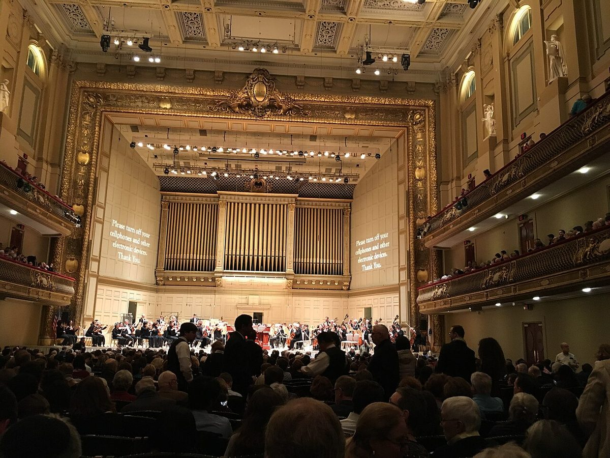
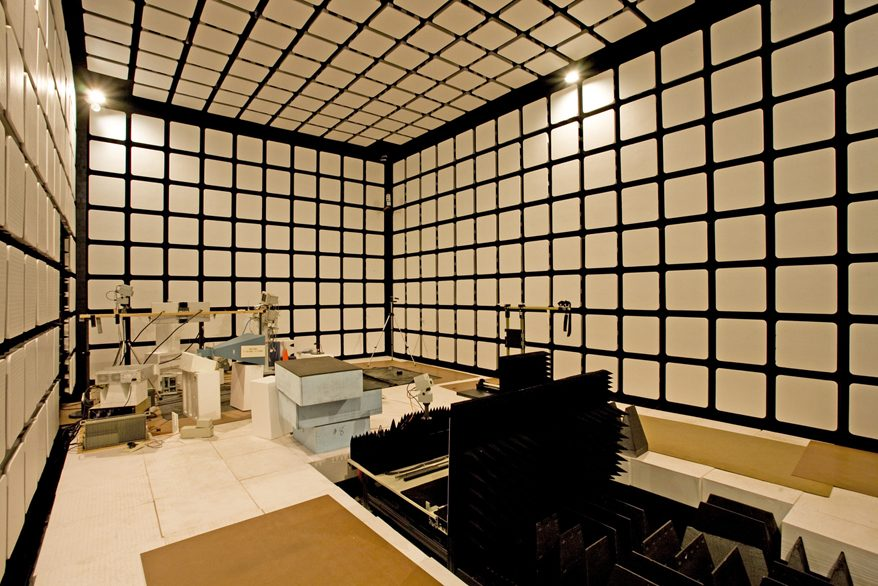
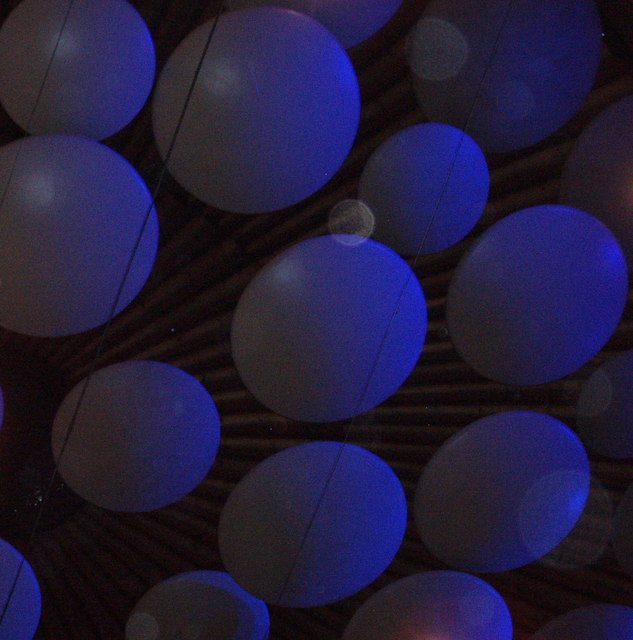
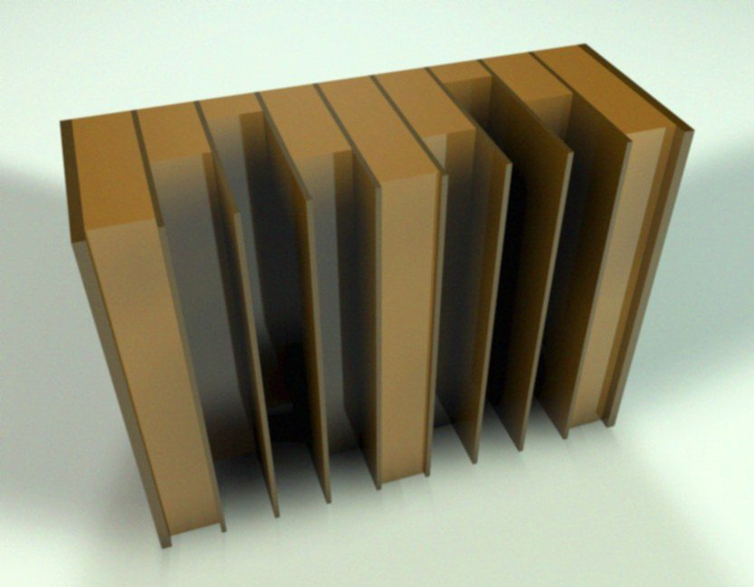
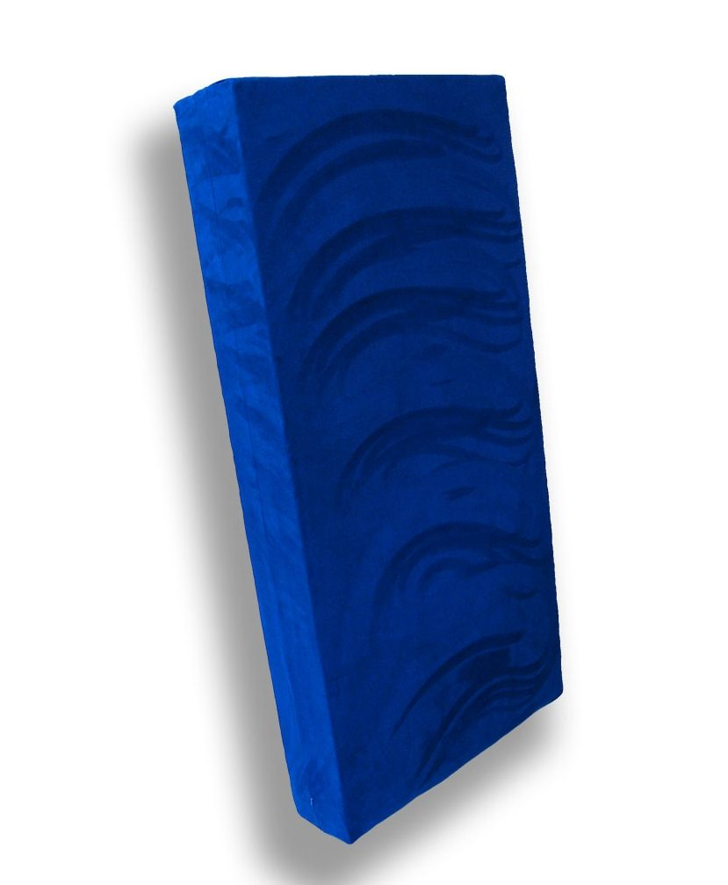

3. Room Acoustics, Modes & Reverb Lab
Sabine RT60 · 2D Room Modes · Live Room Reverb Auralization1. Find the room nodes & corner antinodes
Node
A fixed line or surface where one standing-wave mode has zero pressure variation. At that frequency, bass drops sharply—even though adjacent pitches are loud.
Antinode
Where pressure variation peaks—always strongest against rigid walls and especially in room corners, where all axial/tangential modes sum.
Room mode
A resonance formed when waves bounce between opposing walls in phase. Axial modes involve two walls; tangential modes involve four; oblique involve all six.
f(nₓ,nᵧ,nz) = c / 2 × √[(nₓ/L)² + (nᵧ/W)² + (nz/H)²]
Switch View to Room modes above, turn on Mode Tone, and drag L across a dashed node and into a corner (L → Corner) to hear the modal peak and null.
2. Fix the gymnasium ($8,000 budget)
A principal must deliver an emergency announcement in a hard, empty 34 × 24 × 11 m gymnasium. Add acoustic wall panels, heavy curtains, ceiling baffles / QRD diffusers, and audience seating without shrinking the room or crossing $8,000.
3. Field measurement & safety
- Stand near the room center and record one crisp clap or approved sweep impulse.
- Measure how long the tail takes to drop 60 dB into the room noise floor.
- Compare an empty room vs. a seated audience: padded seats and clothing are high-value porous absorbers.
Safety: never fire starter pistols or unsafe loud impulses in class, and keep listeners away from close-range PA horns.
4. Real rooms, real fixes
Every slider in this lab has a physical counterpart. Click any photograph to enlarge it for discussion.




